Contour experiments
Whole contours. One experiment at a time.
Gentle waves
Loading
About and live performance
A few broad waves gently bend the existing contours.
- Frame rate
- —
- Frame interval · 95%
- —
- JS draw · 95%
- —
- Drawing surface
- —
JS draw measures curve calculation and drawing calls, excluding the browser’s later painting. Frame timing includes other work on this page.
Reduced motion is enabled. The preview starts still; choose Play to try the animation.